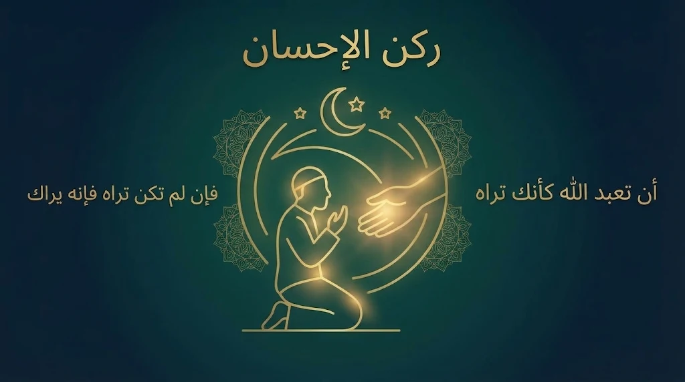

رجوع
الركن
ان تعبد الله كأنك تراه فإن لم تكن تراه فإنه يراك

ركن الإحسان في الإسلام هو ركن واحد، وهو أعلى مراتب الدين بعد الإسلام والإيمان، كما ورد في حديث جبريل: «أن تعبد الله كأنك تراه، فإن لم تكن تراه فإنه يراك»